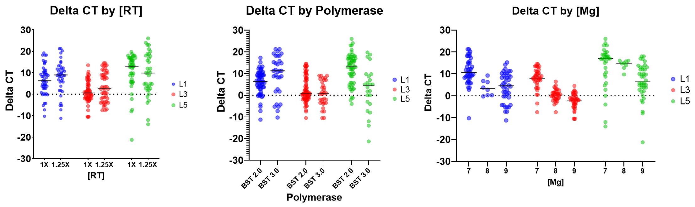

Example Efforts
The DROP system offers broad utility for research and development efforts focused on NAAT assays. Its specialized module, affectionately named RoboNAAT, has been designed to support large-scale experiments for both PCR and isothermal amplification methods. This document includes an example effort involving a SARS-CoV-2 Loop-Mediated Isothermal Amplification (LAMP) assay, demonstrating the platform’s capabilities in streamlining assay optimization and characterization.
Loop-Mediated Isothermal Amplification (LAMP) is an isothermal amplification technique that uses 4 to 6 primers to target and amplify DNA or RNA at a constant temperature, typically between 60–65°C. The method employs a strand-displacing DNA polymerase, which enables efficient amplification without the need for thermal cycling. Unlike PCR, which generates a predictable and uniform amplicon, LAMP produces a variety of complex amplicon structures. This structural diversity offers advantages—such as increased amplification probability—but also presents challenges, including a higher risk of off-target amplification.
Given the complexity of LAMP chemistry, it is well-suited for optimization using the RoboNAAT system. Traditional one-factor-at-a-time (OFAT) approaches may not fully capture the intricate interactions within a LAMP assay. In this example, the RoboNAAT platform is used to demonstrate: (1) Mastermix optimization, (2) additive screening, and (3) assay evaluation are all demonstrated with their example worklists and results.

Figure 1. High level overview of the NAAT optimization efforts described in this page. The efforts were broken into (1) mastermix optimization, (2) additive screening and (3) performance evaluation.
LAMP Mastermix Optimization Effort
Experimental Design
The first step in the optimization process for the SARS-CoV-2 LAMP assay was to optimize the best reagents and optimal concentrations for:
- Polymerase (NEB BST 2.0 or 3.0)
- Reverse transcriptase (Omniscript RT or NEB WarmStart RTx)
- Primer sets (L1, L3, and L5)
- Magnesium
A Definitive Screening Design (DSD) was employed to identify reagent conditions that yielded the fastest time-to-positive without increasing off-target amplification. Using JMP software, the estimated statistical power for all tested variables ranged between 0.99 - 1, indicating high confidence in the results.
The starting mastermix conditions, based on recommendations from New England Biolabs (NEB), were used as a control and included on every plate. In total, 84 mastermix formulations were tested—including the control—across six PCR plates. For each mastermix, four technical replicates were run for both negative controls and positive samples (1,000 copies/µL).
Reagent Preparation
Three LAMP primer sets were designed using Geneious software and published sequences of the SARS-CoV-2 genome. Primers were ordered from IDT.
Reagents required for this effort included:
- 10X Isamp buffer
- MgSO4 diluted to 100mM working stock
- dNTP mix (NEB)
- Nuclease free water
- Evagreen (20X)
- NEB BST 2.0 and 3.0
- Omniscript and NEB Warmstart RT
- Primers (IDT)
- PCR plates
- PCR plate seals
Worklist Preparation and Validation
Worklists were prepared to run the experiment as designed by JMP. This effort was run using 96 well plates and prepared two at a time. The worklists for preparing the mastermix and aliquoting sample were seperated to enable sample preparation to occur while the mastermix is being run. This effort could be accelerated by using a 384 well plate or if there are more thermocyclers available.
Run 1 Make, mix, and aliquot mastermix Aliquot Sample
Run 2 Make, mix, and aliquot mastermix Aliquot Sample
Run 3 Make, mix, and aliquot mastermix Aliquot Sample
Run 4 Make, mix, and aliquot mastermix Aliquot Sample
For all four of these runs, they have similar deck layouts. Examples of the wells and plates used for both worklist types are in the images below.

Figure 2. Deck layout from the make, mix, and aliquot worklist after running in simulation.

Figure 3. Deck layout from the sample aliquot worklist after running in simulation.
All reagent plates were prepared with the reagents detailed in the worklist viewer in the RADA app. This includes all mastermix components and samples (negative and positive). Tips were loaded onto the deck corresponding to the number identified in the simulation run. The validated worklist(s) were then run on the Hamilton STAR using the VENUS software.
Results and Conclusions
From this screening effort, 31 master mix formulations demonstrated improved performance compared to the control.

Figure 4. Snapshot of the data generated from the Definitive Screening Design to identify optimized conditions for the SARS-CoV-2 LAMP assay.
Three key trends emerged:
- Increasing reverse transcriptase concentration had minimal impact on time-to-result across all three primer sets tested.
- Bst 3.0 polymerase enhanced reaction speed for primer set 1, but showed no significant benefit for sets 3 or 5.
- Primer sets 1 and 3 amplified more efficiently at 7 mM Mg²⁺, whereas set 5 did not exhibit a strong response to this condition.
This comprehensive evaluation of over 80 master mix formulations provided deeper insight into LAMP assay behavior. The two top-performing assay conditions were selected for further testing and validation.
LAMP Additive Screening Effort
Experimental Design
The Additive Screening round aimed to evaluate the impact of various additives on assay speed, inhibitor tolerance, and stability. Most additives tested fell into one of three functional categories:
- Stability and blocking agents
- Crowding agents
- Melting temperature (Tm) and secondary structure reducers
Due to the distinct roles of each category, the experimental design included two approaches:
- Each additive was evaluated individually at two concentrations.
- A Definitive Screening Design (DSD) was used to assess combinations of additives within the stability and blocking category.
Reagent Preparation
In addition to the reagent preparation described in the previous effort, a long list of additives and crowding agents were identified for screening. These reagents include:
Stability agents:
- Sucrose
- Trehalose
- BSA
Crowding agents:
- PEG (1000, 3000, and 8000)
- Ficoll (400)
- Dextran (12k, 80k, and 410k)
Tm and secondary structure reducers:
- Formamide
- Betaine
- DMSO
- SSBs
Miscellaneous:
- ATP
- Guanidine
- EDTA
Worklist Preparation and Validation
The additive screening was split into three robot runs, preparing two 96 well plates each run. Examples of the worklists are included below for the first two runs.
Run 1 Make, mix, and aliquot mastermix Aliquot Sample
Run 2 Make, mix, and aliquot mastermix Aliquot Sample
Results and Conclusions
The additive screening approach provided valuable insights into factors that influence time to amplification, off-target amplification, and tolerance to stability agents—particularly those relevant for lyophilization.

Figure 5. Snapshot of the data generated from the Additive Screening to identify optimized conditions for the SARS-CoV-2 LAMP assay.
The quantity of data generated in such a short amount of time highlighted the need for good processes for data analysis and interpretation. Some example observations that were made are included below.
Stability agents:
- Trehalose and sucrose slowed the reaction slightly at 2.5%, but performance was restored at higher concentrations (5%).
- BSA at 2% destabilized the reaction and increased variability.
Crowding agents:
- The crowding agents tested mostly lead to a decrease in time to result (improvements ranging from 5 to 15 cycles for conditions tested), however some conditions had an increase in variability across replicates or an increase in off-target amplification in the negative controls.
- The best improvement was seen from the addition of PEG1K and Dextran 410K, which had average reduction in CT of 15 (with NTCs coming up at ~ 92 cycles) and 15 (w/o NTCs coming up) respectively.
Secondary structure, Tm reducers, and others:
- Formamide slowed reaction speed by ~10 cycles.
- Betaine at 40mM had no significant impact on the assay, while 100mM slowed the reaction slightly.
- DMSO had no significant impact on assay at 2 or 5%.
- EDTA at 0.5 and 1.5mM inhibited amplification entirely. This was a surprising result as this reagent has worked great for another LAMP mastermix.
LAMP Performance Evaluation
Experimental Design
The top mastermix condition as determined by the efforts from mastermix concentration optimization and additive screening was evaluated using an LOD against the starting mastermix. The two conditions are:
- Start mastermix: 1X RT, 1X BST 2.0, 8mM Mg
- Optimized mastermix: 1.25X RT, 1.25X BS 2.0, and 7mM Mg
To generate enough data for the LOD, 8 replicates were run at each concentration tested ranging from 25 - 500 input copies. This range had previously been identified as the dynamic range in which the LOD was likely to be determined.

Figure 6. Informational graphic describing the important concentrations in determining the LOD of an assay. From https://doi.org/10.1016/j.watres.2016.03.026
Reagent Preparation
This effort used the same reagents as the mastermix optimization and additive screening efforts.
Worklist Preparation and Validation
The performance evaluation was completed with a single robot run.
Make, mix, and aliquot mastermix
Results and Conclusions
From this evaluation, it was identified that the optimized mastermix had a 20 fold improvement in LOD as compared to the starting mastermix, with the optimized mastermix and starting mastermix having LODs of 25 and 500 copies/reaction respectively. This is a significant improvement, and was possible after only a couple weeks of hands on work. Additional optimization efforts in a smaller experimental space may provide even more benefits to LOD and/or time to detection.

Figure 7. Example data from an LOD effort comparing the starting LAMP mastermix to the roboNAAT optimized one. In this effort, the LOD was improved 20-fold from the NEB recommended LAMP conditions.
While this effort only ran 8 replicates for each concentration, the roboNAAT system has also been used to run probit analyses comparing the performance of different mastermixes. A probit analysis typically requires 20 replicates run for each concentration, which can be very challenging to set up manually.
These efforts, which included mastermix optimization, additive screening, and performance evaluation, are all pieces required when making a NAAT assay. By streamlining and automating these protocols, it is possible to gain more information about a chemistry in less time than using the traditional manual methods. This is particularly powerful as new isothermal amplification methods are developed, to inform research and development efforts and (hopefully) support products making it to market faster.